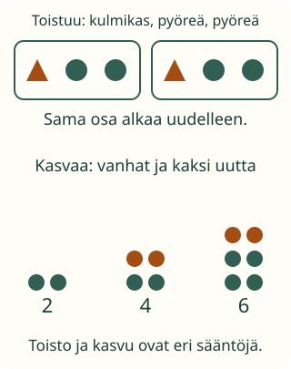

<link rel="stylesheet" href="lesson.css">
<section data-b03="M-TH-04">
<section data-teaching-step="1" data-lesson-role="teaching-step">
<h2>Loikan toistuva nauha ja kasvava kuvio</h2><div class="lesson-intro"><p>Loikan polkumerkki jatkuu. Toisessa kuviossa tulee aina lisää. Ovatko säännöt samanlaiset?</p></div><p><strong>Tavoite: löydän toistuvan osan tai muutoksen ja jatkan kuviota.</strong></p>
</section>


<section data-teaching-step="2" data-lesson-role="teaching-step">
<h3>Rakenna pieni rivi</h3><p>Laita vuorotellen kivi ja lehti: kivi, lehti, kivi, lehti. Sama osa toistuu. Tee sitten osa, jossa on kulmikas ja kaksi pyöreää lappua. Toista se.</p>
<figure data-lesson-role="worked-example"><figcaption>Toistossa sama osa palaa. Kasvussa edellinen kuvio säilyy ja siihen tulee lisää.</figcaption></figure>
</section>


<section data-teaching-step="3" data-lesson-role="teaching-step">
<h3>Älä aloita osaa liian aikaisin</h3><p>Osa on kulmikas, pyöreä, pyöreä. Jos olet tehnyt vasta kulmikkaan ja yhden pyöreän, osa on kesken. Vielä tulee pyöreä. Vasta sitten alkaa uusi osa.</p>
</section>


<section data-teaching-step="4" data-lesson-role="teaching-step">
<h3>Siirrä sama rakenne liikkeeseen</h3><p>Taputus, askel, askel. Taputus, askel, askel. Se on sama toistuva rakenne kuin kulmikas, pyöreä, pyöreä. Voit tehdä liikkeet aikuisen kanssa tai seurata niitä mielessä.</p>
</section>


<section data-teaching-step="5" data-lesson-role="teaching-step">
<p data-lesson-role="question"><strong>Ennusta:</strong> mitä tulee kesken jääneen osan loppuun?</p>
</section>


<section data-teaching-step="6" data-lesson-role="teaching-step">
<section class="practice" aria-label="Toiston rakentaminen"><h3>Jatka toistuvaa kuviota</h3><p>Tässä toistetaan sovittua osaa: kulmikas, pyöreä, pyöreä. Jatka kolmeen paikkaan. Kosketa paikkaa ja sitten sopivaa kuvaa.</p><div class="prefix" data-prefix></div><div class="controls" data-slots></div><div class="controls" data-pattern-palette></div><div class="controls"><button type="button" data-action="check-repeat">Tarkista jatko</button><button type="button" data-action="clear-repeat">Jatko alkuun</button><button type="button" data-action="support">Näytä osien kehykset</button></div><p data-repeat-feedback role="status">Valitse jatkopaikka ja kuva.</p></section>
</section>


<section class="practice" aria-label="Kasvun rakentaminen"><section data-teaching-step="7-model" data-lesson-role="worked-example"><h3>Kasvava kuvio on eri asia</h3><p>Katso mallia vaihe kerrallaan: kaksi pistettä, sitten neljä, sitten kuusi. Edelliset säilyvät ja kaksi uutta tulee joka kerta.</p><div class="scene" data-growth-model></div><p data-growth-model-text>Ensimmäisessä kuviossa on kaksi pistettä.</p><div class="controls"><button type="button" data-action="growth-step">Seuraava mallikuva</button><button type="button" data-action="growth-reset">Malli alkuun</button></div></section><section data-teaching-step="7-question" data-lesson-role="question"><p>Seuraavan kuvan kuusi vanhaa pistettä on jo kopioitu. Lisää vain uudet pisteet sovitun säännön mukaan.</p><div class="scene" data-growth-build></div><div class="controls"><button type="button" data-action="add-dot">Lisää piste</button><button type="button" data-action="remove-dot">Poista oma piste</button><button type="button" data-action="check-growth">Tarkista uusi kuvio</button></div><p data-growth-feedback role="status">Vanhat säilyvät. Montako uutta tarvitset?</p><details data-lesson-role="hint"><summary>Apua</summary><p>Seuraa yhtä toistuvaa osaa sormella. Kehykset ovat vapaaehtoinen apu. Kasvussa katso kahden mallikuvan eroa: mitä uutta tuli?</p></details></section></section>


<section data-teaching-step="8" data-lesson-role="teaching-step">
<details data-lesson-role="teaching-step"><summary>Kokeile lisää</summary><p>Voit nimetä myös kaksi peräkkäistä toistuvaa osaa yhdeksi pidemmäksi osaksi. Sekin toistuu. Kokeile kääntää tuttu kuviorivi toisiksi esineiksi. Vanhempi oppija voi keksiä eri kasvusäännön ja kertoa sen.</p></details>
</section>

<details class="teacher" data-lesson-role="teacher-note"><summary>Aikuiselle: prosessi ja säännön rajaus</summary><p>Luokat 1–6; M-TH-01 on vahva tuki, ei avauslukko. Muotojen nimiä, värien erottamista tai puhetta ei tarkisteta. Toistoharjoitus seuraa nimenomaan sovittua kolmen kuvan osaa. Lyhyt alkujono ei yksin määrää ainoaa mahdollista jatkoa; avoimessa keskustelussa hyväksy myös muut johdonmukaiset säännöt.</p><p>Kasvuesimerkissä käytetään laskemista ja kahden lisäämistä. Pistekuva ja aikuinen voivat tukea niitä; tulosta ei tulkita yleiseksi säännön löytämisen taidoksi. Ilman laitetta: tee irtopaloista toistuva nauha, sitten kopioi vanha pistekuvio ja lisää aina kaksi uutta.</p></details>

<section data-teaching-step="9" data-lesson-role="teaching-step">
<p data-lesson-role="question"><strong>Lopuksi:</strong> toistuuko sama osa vai muuttuuko kuvio joka kerta?</p>
</section>
</section>